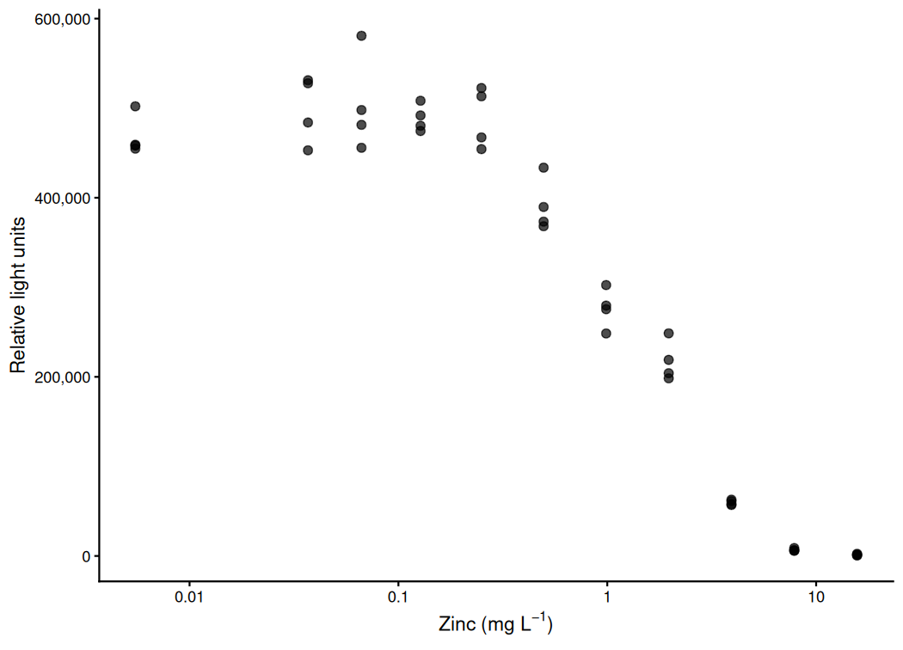
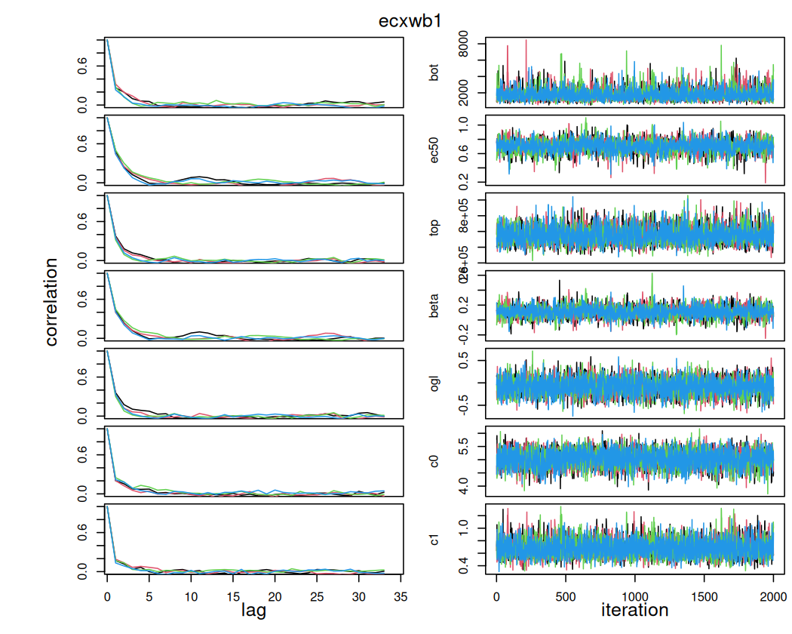
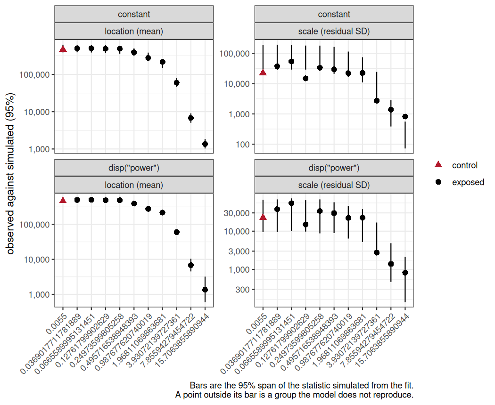
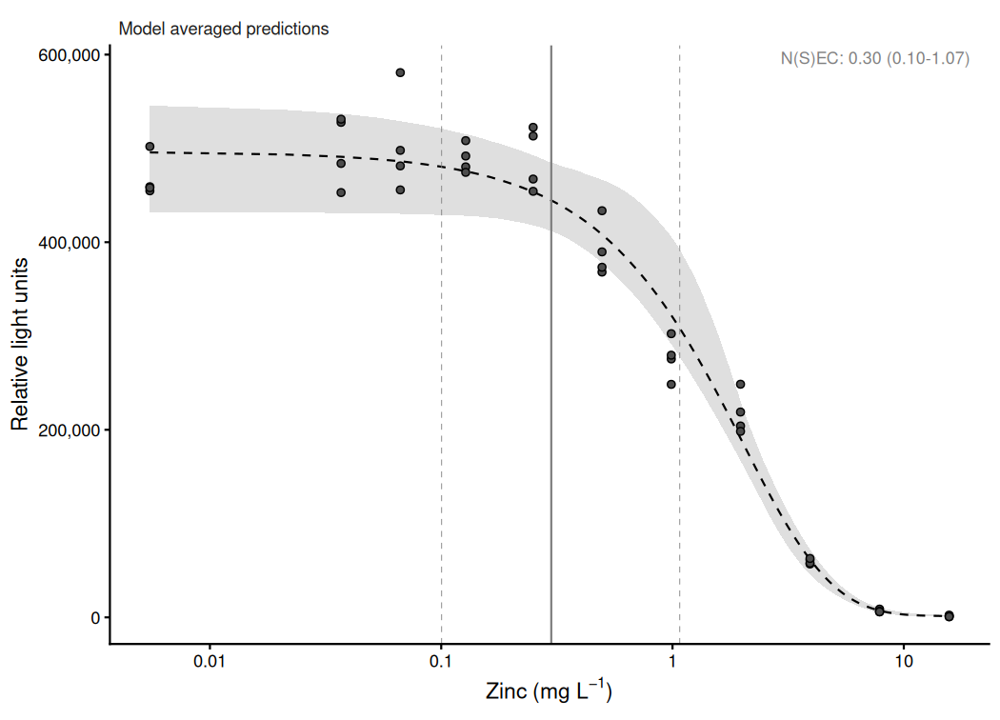

The other vignettes each explain one part of bayesnec
(e.g., what the model set is, what a bayesmanecfit is, how
priors are built, and how to handle a two-block response). Here we run
one analysis, on one plate of a bioluminescence toxicity test, from the
data through to a reportable estimate, taking the steps in the order in
which they occur:
The construction of the default priors, and
check_priors(), are described in the Priors
vignette.
A Bayesian fit is usually judged on convergence, although convergence
is not the only thing that can be wrong with it. rhat(),
check_chains() and check_sampling() ask
whether the sampler explored the posterior, and loo and
waic rank the candidate equations against one another.
However, none of them asks whether the variability implied by the fitted
model matches the variability in the data. That assumption can affect a
threshold estimate even when the sampling diagnostics are
satisfactory.
The NSEC depends on it most directly. nsec()
sets its reference at a quantile of the posterior of the control mean,
and the width of that posterior depends in part on the dispersion
estimated at the control. If a model simulates more variability at the
control than the data show, the reference is placed lower, so the curve
crosses it further along and the reported concentration is higher and
less protective. If a model simulates less variability, the reference is
placed higher and a lower concentration is returned. The direction of
the error is not known in advance, and no convergence diagnostic reveals
it (this point is also made, for the choice between constant and
non-constant dispersion, in Single
model usage). The ECx depends on this assumption less. Although
it is also measured from the control mean, it is measured at a fixed
fraction of that mean and not at a quantile of its posterior, so an
error in the variance widens or narrows the ECx interval without
relocating the reference it is measured from.
A single ratio statistic for the whole fit does not detect this kind
of error. Each family with a free dispersion parameter (i.e.,
gaussian, Gamma, negbinomial,
Beta and beta_binomial) estimates that
parameter from the residuals that such a statistic summarises. The
parameter therefore absorbs the discrepancy, so that the ratio is near 1
while the fit simulates the wrong spread at the concentrations that
determine the estimate. For this reason the check is made within
concentration groups, which is what check_fit() does.
Multi
model usage notes that a poorly shaped model with a low
predictive weight may contribute little to a model average. A model that
has not sampled adequately, however, contributes on the basis of a
posterior the sampler has not explored reliably. Because its weight is
computed from that same posterior, the weight provides no evidence that
it is safe to keep. Removing such a model changes the candidate set, and
amend() then recomputes the weights across the models that
remain (it does not rescale the weights of those retained), and the
reported N(S)EC changes accordingly.
Which models a screen will remove cannot be predicted before it is run, and the reasons for removal differ between them. An equation given too few draws, an equation whose posterior the sampler cannot traverse, and an equation the design does not support are all reported under one failure flag, although the appropriate response to each is different.
The analysis uses one plate of the zinc series of the
lum31 bioluminescence assay, read at 15 minutes. Grouping
and factor covariates fits the same plate to compare
group-level terms, and here we take it through a complete analysis. It
ends with a draft of the methods and results text a paper might give for
it, in which steps 1 to 6 are presented as the supplementary material.
The threshold estimates themselves (NEC, NSEC, ECx,
and the model-averaged N(S)EC reported when a set mixes both
kinds) are defined, together with the candidate equations, in Model
details.
The lum31 data contain the results of acute copper and
zinc toxicity tests run on the Lum-31 bioluminescent bacterial assay
(Luter et al. 2025). A suspension of
marine bacteria is dosed in a microplate well and its light output is
read after a fixed exposure, so the response is luminescence in relative
light units (?lum31 documents the columns).
We use one plate of the zinc series read at 15 minutes (plate
Zn 23Apr24 Rep6B). A plate is a complete test (i.e., eleven
concentrations by four replicate wells). Because the plate reader sets
its gain for each read, plates are not on a common vertical scale, and
taking a single plate avoids that difference instead of modelling it.
The plate terms that model it are described in Grouping and factor
covariates.
data(lum31)
zn <- droplevels(subset(lum31, plate == "Zn 23Apr24 Rep6B" & minutes == 15))
c(wells = nrow(zn), concentrations = length(unique(zn$conc)),
at_the_floor = sum(zn$censoring != "none"))
#> wells concentrations at_the_floor
#> 44 11 0
zinc_axis <- list(
scale_x_continuous(transform = "log", breaks = c(0.01, 0.1, 1, 10),
labels = function(x) signif(x, 2)),
scale_y_continuous(labels = function(x) {
format(x, big.mark = ",", scientific = FALSE)
}),
labs(x = expression(paste("Zinc (mg ", L^-1, ")")),
y = "Relative light units")
)
ggplot(zn, aes(x = conc, y = rlu_cens)) +
geom_point(alpha = 0.7, size = 2) +
zinc_axis +
theme_classic()
plot of chunk exmp9-zinc-data
Each point is one well. The mean response rises above its control value at low concentrations, to 1.08 times the control at 0.067 mg/L, remains above 90 per cent of the control up to 0.25 mg/L, and falls to 0.3 per cent of it at the highest concentration (15.7 mg/L). The mean at each of the second to fifth concentrations is above the mean at the lowest on 8 of the 17 zinc plates of this assay read at 15 minutes, so a rise of this kind is common in the assay, and step 2 includes equations that allow it.
The four wells at a concentration share one cell of the plate, and
readings from one cell can vary together. Each fit below therefore
includes ogl(conc_group), a deviation for each cell, so
that the cell (and not the well) is the observation at each
concentration. Grouping within a concentration in Grouping
and factor covariates compares fits of this plate with and
without the term, and describes how the model weights are computed under
it. The dispersion parameter then describes the spread of the wells
within a cell.
Concentrations are measured dissolved zinc, and the lowest (0.0055
mg/L) serves as the control, because bayesnec takes the
control to be the lowest value of the predictor. The concentrations span
3.5 orders of magnitude, so we fit zinc on a log scale, and because the
lowest value is positive no substitution is needed before taking
logarithms.
Luminescence is continuous and positive, so we use a
Gamma family with an identity link, which keeps
top and any estimated lower asymptote (bot) on
the scale of relative light units. Readings were blank-corrected, and on
some plates a well emitting less light than the blank was recorded as
zero. Such a reading is below the floor of the instrument and is not an
absence of light, so it is left-censored:
rlu_cens | cens(censoring) replaces it by the smallest
positive reading on the plate and declares that the true value is below
that bound (?lum31, and Censoring in Single
model usage). No reading on this plate is at the floor, so the
censoring term changes nothing here, and we keep it so that the same
call fits any plate.
A Gamma family with one shape parameter
assumes a constant coefficient of variation (i.e., the standard
deviation of a well is a fixed multiple of the fitted mean at each
concentration). The coefficient of variation computed from the four
wells at one concentration involves no curve, so it can be read before
any fit:
cv_obs <- tapply(zn$rlu_cens, zn$conc, function(z) sd(z) / mean(z))
round(cv_obs, 3)
#> 0.0055 0.0369017711781889 0.0665589995131451 0.12761799902629 0.24973599805258
#> 0.048 0.075 0.107 0.030 0.069
#> 0.495716538948393 0.987677620740019 1.96811069863681 3.93072139727361 7.85594279454722
#> 0.076 0.080 0.103 0.046 0.204
#> 15.7063855890944
#> 0.603Up to 3.9 mg/L the coefficient of variation is between 0.03 and 0.11,
and at the 2 higher concentrations it is 0.20 and 0.60, as the response
falls towards zero. One shape cannot describe both, so each
fit below includes disp("power"), which lets the dispersion
parameter change with the fitted mean (see Non-constant
dispersion in Single
model usage). Grouping
and factor covariates fits the zinc plates of this assay with
the same term, and step 5 compares it with constant dispersion.
The zinc response rises above its control before it falls (step 1),
so we request model = "all". It adds the hormesis
equations, which allow such a rise, to the equations for a declining
response and the constant equation ecxflat (a response
independent of concentration). An equation that fits or samples poorly
is not made suitable by being assigned a small model weight, and steps 3
to 5 check each one.
Some equations estimate a lower asymptote (bot), whereas
the others decline towards zero. Here the response is near zero only at
the highest concentrations (step 1), so the design includes little of
the lower limb from which bot is estimated.
The family and the logged predictor also rule out equations before
sampling, for example an equation that can predict a negative mean under
an identity link, which a Gamma family cannot take, or one
that raises a negative logged concentration to a fractional power.
bnec_record() lists those excluded, with the reasons, after
the fit below. get_priors() returns entries only for the
equations that remain valid (Model
details gives their equations, and ?models the
model groups).
gfam <- Gamma(link = "identity")
zinc_formula <- rlu_cens | cens(censoring) ~
crf(log(conc), model = "all") + ogl(conc_group) + disp("power")
prior_default <- get_priors(zinc_formula, data = zn, family = gfam,
prior_type = "uninformative")
names(prior_default)
#> [1] "nec3param" "nec4param" "nechorme" "nechorme4" "ecxexp" "ecx4param"
#> [7] "ecxwb1" "ecxwb2" "ecxwb1p3" "ecxwb2p3" "ecxll5" "ecxll4"
#> [13] "ecxll3" "ecxhormebc4" "ecxflat"We fit these 15 equations first under the default
"uninformative" priors (?bnec describes the
set). Step 4 fits them again under the "regularizing"
priors, which provide the sampler with more information about plausible
parameter values, to test whether that information allows the equations
that fail in step 3 to be sampled. For example, the default entries for
the top, bot, ec50 and
f parameters of ecxll5 are:
selected_priors <- function(x) {
p <- as.data.frame(x[["ecxll5"]])
p <- p[p$nlpar %in% c("top", "bot", "ec50", "f"),
c("nlpar", "prior", "lb", "ub")]
rownames(p) <- NULL
p
}
entries_default <- selected_priors(prior_default)
entries_default
#> nlpar prior lb ub
#> 1 top gamma(2, 4.16172894867444e-06) 0 <NA>
#> 2 bot gamma(2, 3.20461413161126e-05) 0 <NA>
#> 3 ec50 normal(-0.70175100967784, 24.4000626374049) -5.20300718674371 2.75406735508393
#> 4 f normal(0, 5) <NA> <NA>top and bot are gamma priors on the
response scale. ec50 is a normal prior on log
concentration, bounded below by the logged control and (because
asymptote_observed = TRUE, the default) above by the logged
highest concentration. f, the exponent that sets the
asymmetry of ecxll5, is normal(0, 5). Priors
explains how the entries are constructed and how to compare them with
the posterior.
bnec() uses four chains and 10,000 iterations per chain
by default. Under its warmup rule the first 8,000 iterations of each
chain are discarded, so 8,000 post-warmup draws remain across the four
chains. We use these defaults here and for the refits in steps 4 and 5,
with identical data and seed. The seed argument controls
Stan’s sampler, whereas set.seed() controls the initial
values bayesnec generates in R, so both are set. The
precompiled vignette uses the cmdstanr backend (through
options(brms.backend = "cmdstanr")); without that option
brms uses rstan, and the diagnostic counts
below may differ.
set.seed(17)
fit_default <- bnec(zinc_formula, data = zn, family = gfam,
prior_type = "uninformative", seed = 17, refresh = 0)
#> Dropping the model neclin, neclinhorme, nechormepwr01, ecxlin as they are not valid in the case of a Gamma with identity link.
#> Dropping the model(s) necsigm, nechormepwr, nechorme4pwr, ecxsigm as they are not valid for data with negative predictor (x) values.
#> Dropping the model ecxhormebc5 because it cannot be reliably initialised for a Gamma with identity link when the predictor (x) contains negative values. Use a scientifically appropriate non-negative predictor scale or select another equation.
#> The response is still declining at the top of the series: the mean rlu_cens falls from 6800 to 1360 as log(conc) rises from 2.06 to 2.75 (p = 0.0015, one-sided).
#> The lower asymptote may not be identified by this design: where an equation estimates bot its default prior is derived from the observed response, and the default nec and ec50 priors are bounded to the tested range, so they exclude a threshold above it. Inspect the entries with get_priors() and supply scientifically justified ones through the prior argument where information beyond the design is available. Where the design did stop before the asymptote, declare it with asymptote_observed = FALSE, which spans the bot prior from the floor of the response to the mean at the highest predictor level, removes the upper bound of the nec and ec50 priors, and widens the initial-value search to match.
#> Fitted models are: nec3param nec4param nechorme nechorme4 ecxexp ecx4param ecxwb1 ecxwb2 ecxwb1p3 ecxwb2p3 ecxll5 ecxll4 ecxll3 ecxhormebc4 ecxflat
#> The fitted ecxflat curve does not fall to the control's 0.01 quantile within the predictor range for 7920 of 8000 draws. The NSEC summary is censored at 2.75: those draws keep their rank in it and are given no value.
#> The leave-one-group-out score has Pareto k at or above 0.7 for 3 of 11 levels of conc_group in ecxwb1 (weight 0.57); 4 of 11 levels of conc_group in ecxll5 (weight 0.37); 1 of 11 levels of conc_group in ecxll3 (weight 0.031); 4 of 11 levels of conc_group in ecxhormebc4 (weight 0.02). The affected scores are approximate; loo_controls = list(refit = TRUE) replaces them by refitting the equation without each level.The control group's observed and simulated response differ by more than 15% for: nec3param, nec4param, nechorme, nechorme4, ecxexp, ecx4param, ecxwb1, ecxwb2, ecxwb1p3, ecxwb2p3, ecxll5, ecxll4, ecxll3, ecxhormebc4, ecxflat.
#> nsec() reads its reference from the control, so this is the region most likely to move a reported no-effect concentration.
#> See check_fit() for the per-group table. This is a modelling result, not a fault.While fitting, bnec() also prints a line as it begins
and completes each equation, and the sampler prints its own warnings,
including the number of divergent transitions; those lines are omitted
above, and step 3 examines the same diagnostics with
check_sampling(). Before fitting, bnec() names
the equations it drops, for the reasons given above. The messages after
fitting concern the fitted equations. They report, where any occur, the
draws for which a curve does not fall to the NSEC reference within the
tested range (those draws are censored in the NSEC summary), the cells
whose Pareto k is at or above 0.7 (step 3), and the equations
whose control mean or spread is not reproduced within 15% (step 5).
record_default <- bnec_record(fit_default)
record_default$excluded
#> model
#> 1 neclin
#> 2 neclinhorme
#> 3 nechormepwr01
#> 4 ecxlin
#> 5 necsigm
#> 6 nechormepwr
#> 7 nechorme4pwr
#> 8 ecxsigm
#> 9 ecxhormebc5
#> reason
#> 1 not valid for Gamma with an identity link
#> 2 not valid for Gamma with an identity link
#> 3 not valid for Gamma with an identity link
#> 4 not valid for Gamma with an identity link
#> 5 raises the predictor to a fractional power, which is undefined for negative predictor values
#> 6 raises the predictor to a fractional power, which is undefined for negative predictor values
#> 7 raises the predictor to a fractional power, which is undefined for negative predictor values
#> 8 raises the predictor to a fractional power, which is undefined for negative predictor values
#> 9 cannot be reliably initialised for Gamma with an identity link when the predictor contains negative values
is.null(record_default$substitutions)
#> [1] TRUEbnec_record() gives the equations excluded before
fitting, with the reasons above, and any value changed to make the
response compatible with the family (substitutions, which
is NULL here because rlu_cens is strictly
positive). Every requested equation is either excluded or
attempted, and an attempted equation that did not fit
remains in attempted. failed_models() lists
such equations, and in this run no equation failed to fit. It also keeps
the priors and initial values used for each failed equation, which are
useful when investigating the failure. A different initialisation or
prior may allow such a fit to start (step 4 refits the set under other
priors), although that does not show that the resulting posterior is
identified by these concentrations.
summary() gives the model weights, computed from
leave-one-cell-out scores, the model-averaged N(S)EC, and the
Bayesian R² and number of divergent transitions of each equation. It
ends with a warning that names each equation whose maximum Rhat exceeds
1.01 or which has more than ten divergent transitions, and each equation
whose control mean or spread is not reproduced within 15%.
summary_default <- summary(fit_default)
summary_default
#> Object of class bayesmanecfit
#>
#> Family: gamma
#> Links: mu = identity; shape = log
#>
#> Number of posterior draws per model: 8000
#>
#> Model weights (Method: pseudobma_bb_weights; each level of conc_group left out):
#> waic elpd wi
#> nec3param 981.24 -505.91 0.00
#> nec4param 984.07 -511.81 0.00
#> nechorme 981.71 -506.47 0.00
#> nechorme4 984.27 -511.24 0.00
#> ecxexp 998.11 -531.20 0.00
#> ecx4param 982.71 -506.13 0.00
#> ecxwb1 981.48 -497.19 0.57
#> ecxwb2 983.40 -508.09 0.00
#> ecxwb1p3 988.08 -511.04 0.00
#> ecxwb2p3 981.01 -504.25 0.00
#> ecxll5 979.70 -497.66 0.37
#> ecxll4 983.19 -505.60 0.00
#> ecxll3 980.87 -501.94 0.03
#> ecxhormebc4 981.19 -502.22 0.02
#> ecxflat 1043.81 -557.08 0.00
#>
#>
#> Summary of weighted N(S)EC posterior estimates:
#> NB: Model set combines sampled NEC and curve-read NSEC
#> estimates in proportion to model weight.
#> Estimate Q2.5 Q97.5
#> N(S)EC 0.37 0.14 1.03
#>
#>
#> Bayesian R2 estimates:
#> Estimate Est.Error Q2.5 Q97.5
#> nec3param 0.98 0.00 0.97 0.99
#> nec4param 0.98 0.00 0.97 0.99
#> nechorme 0.98 0.00 0.97 0.99
#> nechorme4 0.98 0.00 0.97 0.99
#> ecxexp 0.98 0.00 0.97 0.98
#> ecx4param 0.98 0.00 0.97 0.99
#> ecxwb1 0.98 0.00 0.97 0.99
#> ecxwb2 0.98 0.00 0.97 0.99
#> ecxwb1p3 0.98 0.00 0.97 0.99
#> ecxwb2p3 0.98 0.00 0.97 0.99
#> ecxll5 0.98 0.00 0.97 0.99
#> ecxll4 0.98 0.00 0.97 0.99
#> ecxll3 0.98 0.00 0.97 0.99
#> ecxhormebc4 0.98 0.00 0.97 0.99
#> ecxflat 0.95 0.02 0.91 0.98
#>
#>
#> Divergent transitions after warmup:
#> n_divergent
#> nec3param 0
#> nec4param 89
#> nechorme 0
#> nechorme4 17
#> ecxexp 66
#> ecx4param 0
#> ecxwb1 0
#> ecxwb2 0
#> ecxwb1p3 0
#> ecxwb2p3 0
#> ecxll5 1284
#> ecxll4 0
#> ecxll3 0
#> ecxhormebc4 0
#> ecxflat 0
#>
#>
#> Fitted by bayesnec 2.1.3.44, installed from a local source, which records no commit, under R 4.6.1.
#> Warning in print.manecsummary(x): Rhat > 1.01 (no convergence):
#> - nec4param
#> - ecxll5
#>
#> Divergent transitions > 10 (see ?check_sampling):
#> - nec4param (89, model weight 0.00)
#> - nechorme4 (17, model weight 0.00)
#> - ecxexp (66, model weight 0.00)
#> - ecxll5 (1284, model weight 0.37)
#>
#> control observed/simulated ratio beyond 1.15 (see ?check_fit):
#> - nec3param
#> - nec4param
#> - nechorme
#> - nechorme4
#> - ecxexp
#> - ecx4param
#> - ecxwb1
#> - ecxwb2
#> - ecxwb1p3
#> - ecxwb2p3
#> - ecxll5
#> - ecxll4
#> - ecxll3
#> - ecxhormebc4
#> - ecxflat
#> Sampler failures should be dropped (see ?amend or ?screen_models).
#> A control mis-fit is a result, not a fault: inspect it with check_fit().These weights are computed over every fitted equation, including any that the warning names. In this run the warning names 4 of the 15 fitted equations for their Rhat or divergent transitions, and together they hold 0.37 of the model weight. The model-averaged N(S)EC in the summary therefore includes equations whose posteriors the sampler may not have explored reliably, and it is not an estimate to report. Step 3 examines the sampler diagnostics of each equation and removes those that fail them before any estimate is read.
An attempted equation that produces draws must still be checked. The
package screen uses a maximum Rhat of 1.01, a minimum effective sample
size (ESS, the smaller of the bulk and tail values) of 400, and at most
ten divergent transitions. The Rhat and ESS cutoffs follow the
recommendations of Vehtari et al. (2021),
whereas the allowance of ten divergences is a bayesnec
convention (Stan regards any divergence as evidence that some part of
the posterior was not explored). A screen result is specific to the
data, priors, sampler settings and seed. The table gives the curve
parameters of each valid equation, its maximum Rhat, minimum ESS and
number of divergent transitions under the default priors, and whether it
failed the screen.
round_cols <- function(x, digits = 3) {
num <- vapply(x, is.numeric, logical(1))
x[num] <- lapply(x[num], round, digits)
x
}
sampling_default <- check_sampling(fit_default)
valid <- names(prior_default)
curve_parameters <- lapply(valid, function(m) names(show_params(m)[[1]]$pforms))
first_run <- sampling_default[match(valid, sampling_default$model), ]
data.frame(
model = valid,
parameters = vapply(curve_parameters, paste, character(1), collapse = ", "),
max_rhat = round(first_run$max_rhat, 3),
min_ess = round(first_run$min_ess),
n_divergent = first_run$n_divergent,
failed = first_run$failed,
row.names = NULL
)
#> model parameters max_rhat min_ess n_divergent failed
#> 1 nec3param top, beta, nec 1.002 1514 0 FALSE
#> 2 nec4param bot, top, beta, nec 1.016 107 89 TRUE
#> 3 nechorme top, beta, nec, slope 1.005 1292 0 FALSE
#> 4 nechorme4 bot, top, beta, nec, slope 1.007 795 17 TRUE
#> 5 ecxexp top, beta 1.006 1489 66 TRUE
#> 6 ecx4param bot, ec50, top, beta 1.003 1714 0 FALSE
#> 7 ecxwb1 bot, ec50, top, beta 1.002 1795 0 FALSE
#> 8 ecxwb2 bot, ec50, top, beta 1.003 1687 0 FALSE
#> 9 ecxwb1p3 ec50, top, beta 1.005 938 0 FALSE
#> 10 ecxwb2p3 ec50, top, beta 1.001 1868 0 FALSE
#> 11 ecxll5 bot, top, beta, ec50, f 1.148 18 1284 TRUE
#> 12 ecxll4 bot, top, beta, ec50 1.004 1897 0 FALSE
#> 13 ecxll3 top, beta, ec50 1.003 1647 0 FALSE
#> 14 ecxhormebc4 top, beta, ec50, slope 1.003 1892 0 FALSE
#> 15 ecxflat top 1.006 1235 0 FALSEA row of NA marks an attempted equation with no draws,
which is distinct from a fitted equation that missed a cutoff. Under the
default priors 11 of the 15 fitted equations passed
(nec3param, nechorme, ecx4param,
ecxwb1, ecxwb2, ecxwb1p3,
ecxwb2p3, ecxll4, ecxll3,
ecxhormebc4 and ecxflat), and 4 of the 4 that
failed had more than ten divergent transitions. Of the 7 equations with
a bot parameter, 4 passed, against 7 of the 8 equations
without one. The diagnostics do not show which parameter is responsible
for a failure.
The failed flag does not distinguish which cutoff was
missed, although the remedy differs between them. An equation that
misses the Rhat or ESS cutoff with few divergences may only have been
given too few draws, and more iterations may raise its ESS. Divergences
describe a different problem: additional draws visit the difficult part
of the posterior more often, so increasing iter by itself
is unlikely to remove them. A higher adapt_delta (set
through the control argument) makes the sampler take
smaller steps and may reduce them. If Stan also warns about maximum tree
depth, max_treedepth is the relevant control to examine
(see ?check_sampling). An equation that never initialises
is recorded by failed_models(), and has no sampler
diagnostics to screen.
The ESS floor and the divergence allowance are both absolute counts.
At an unchanged divergence rate a longer run will record more
divergences, while it may also provide enough draws for an ESS above
400. A comparison between runs therefore needs their chain counts,
iterations and warmup beside the diagnostic table. The decision also
uses min_ess (an absolute count) and not
min_ess_ratio (a measure of sampling efficiency), so a
model can meet the count after many draws while still sampling
inefficiently; check_sampling() returns both. The 1.01 Rhat
cutoff is also the one used by rhat() and
summary().
An equation that fails on Rhat or ESS with no more than ten divergent
transitions should be refitted under the same prior with more iterations
before it is excluded, because changing the prior would not test whether
the original run was too short. The chunk below refits any such equation
with twice the iterations and warmup, thinned by two so that it keeps
the 8,000 draws of the other equations (the model weights compare
leave-out scores computed from equal numbers of draws), and replaces it
in the set before screening. An equation with more than ten divergent
transitions is instead refitted with the same iterations at
adapt_delta = 0.99, or at 0.999 if its first fit already
used 0.99. Steps 4 and 5 apply the same rules to their refits.
retry_models <- function(tab) tab$model[tab$failed & tab$n_divergent <= 10]
tune_models <- function(tab) tab$model[tab$failed & tab$n_divergent > 10]
refit_failed <- function(fit, retry, tune) {
if (!length(retry) && !length(tune)) return(fit)
longer <- lapply(retry, function(m) {
update(pull_out(fit, model = m), iter = 2e4, warmup = 1.6e4, thin = 2,
refresh = 0)
})
tuned <- lapply(tune, function(m) {
first <- brms::control_params(pull_brmsfit(fit, model = m))$adapt_delta
delta <- if (isTRUE(first >= 0.99)) 0.999 else 0.99
update(pull_out(fit, model = m), control = list(adapt_delta = delta),
refresh = 0)
})
# c() keeps the first copy of an equation it is given twice, so the refits
# come first.
do.call(c, c(longer, tuned, list(fit)))
}
retry_default <- retry_models(sampling_default)
tune_default <- tune_models(sampling_default)
set.seed(17)
refit_default <- refit_failed(fit_default, retry_default, tune_default)
sampling_default_refit <- check_sampling(refit_default)
refitted_default <- c(retry_default, tune_default)
if (length(refitted_default)) {
round_cols(sampling_default_refit[sampling_default_refit$model %in%
refitted_default, ])
}
#> model max_rhat min_ess min_ess_ratio n_divergent failed
#> 1 nec4param 1.148 11.072 0.001 272 TRUE
#> 2 nechorme4 1.008 721.932 0.090 4 FALSE
#> 3 ecxexp 1.002 1320.768 0.165 0 FALSE
#> 4 ecxll5 1.006 1527.431 0.191 0 FALSEIn this run the longer refit was applied to no equation, and the
refit at a higher adapt_delta to nec4param,
nechorme4, ecxexp and ecxll5. The
table above gives the diagnostics of each refitted equation after its
refit, and the screen below uses those.
screen_models() drops each equation that misses any
cutoff, names it with the cutoffs it failed, and recomputes the model
weights over the equations that pass. Its messages are the record a
methods section should cite, so we leave them visible. The constant
equation ecxflat may remain because it samples well, even
where it has almost no predictive weight: the screen asks whether the
posterior draws are reliable, and does not select equations for their
fit to the observed response. If every fitted equation fails, the
function stops with the reasons instead of returning a model
average.
screened_default <- screen_models(refit_default)
#> Dropping 1 of 15 candidate models that failed the sampler screen:
#> - nec4param: Rhat 1.148, ESS 11.1, 272 divergent transitions
#> Fitted models are: nechorme4 ecxexp ecxll5 nec3param nechorme ecx4param ecxwb1 ecxwb2 ecxwb1p3 ecxwb2p3 ecxll4 ecxll3 ecxhormebc4 ecxflat
#> The fitted ecxflat curve does not fall to the control's 0.01 quantile within the predictor range for 7920 of 8000 draws. The NSEC summary is censored at 2.75: those draws keep their rank in it and are given no value.
#> The leave-one-group-out score has Pareto k at or above 0.7 for 3 of 11 levels of conc_group in
#> ecxwb1 (weight 0.7); 4 of 11 levels of conc_group in ecxll5 (weight 0.23); 1 of 11 levels of
#> conc_group in ecxll3 (weight 0.036); 4 of 11 levels of conc_group in ecxhormebc4 (weight 0.023).
#> The affected scores are approximate; loo_controls = list(refit = TRUE) replaces them by refitting
#> the equation without each level.After the refits, the screen retained 14 of the 15 fitted equations
(nechorme4, ecxexp, ecxll5,
nec3param, nechorme, ecx4param,
ecxwb1, ecxwb2, ecxwb1p3,
ecxwb2p3, ecxll4, ecxll3,
ecxhormebc4 and ecxflat).
The four wells in a cell are related observations, so leaving out one
well at a time would overstate how well a model predicts a new cell.
Because ogl(conc_group) is in the formula, the default
model weights instead leave out a whole cell at a time, and are computed
from those leave-one-cell-out scores by the default pseudo-BMA method. A
cell here is a whole concentration, so leaving it out removes a point on
the curve. Pareto k assesses whether the importance-sampling
approximation to each left-out score is reliable, and the score of a
cell with k at or above 0.7 is unreliable until an exact refit
replaces it. check_fit() returns these diagnostics for each
equation as its "pareto" attribute, and we show the model
weight, the number of cells at or above 0.7 and the largest k
for each retained equation. This check belongs after screening, because
the weights of models whose posterior was not sampled adequately should
not be interpreted.
pareto_rows <- function(x) {
p <- attr(check_fit(x, ndraws = 100), "pareto")
if (anyNA(p$n_high_k)) stop("Pareto diagnostics are unavailable")
p[, c("model", "weight", "n_high_k", "max_k")]
}
pareto_default <- pareto_rows(screened_default)
round_cols(pareto_default)
#> model weight n_high_k max_k
#> 1 nechorme4 0.000 5 0.958
#> 2 ecxexp 0.000 2 1.128
#> 3 ecxll5 0.235 4 0.926
#> 4 nec3param 0.001 3 0.936
#> 5 nechorme 0.000 3 0.947
#> 6 ecx4param 0.001 4 1.154
#> 7 ecxwb1 0.696 3 0.902
#> 8 ecxwb2 0.000 3 0.976
#> 9 ecxwb1p3 0.004 2 1.170
#> 10 ecxwb2p3 0.003 1 0.845
#> 11 ecxll4 0.001 4 0.938
#> 12 ecxll3 0.036 1 0.859
#> 13 ecxhormebc4 0.023 4 0.827
#> 14 ecxflat 0.000 1 1.760In this run 14 of the 14 retained equations had at least one cell
with k at or above 0.7 (the largest k was 1.76).
amend(x, loo_controls = list(refit = TRUE)) replaces each
such score by refitting the equation without that cell, which takes one
refit for each cell at or above the cutoff. The weights of this set are
used only to compare it with later fits, so we make the exact refits
only for the set the reported estimates come from (step 4), and the
weights below are approximate.
weights_of <- function(x, label) {
w <- summary(x)$mod_weights
setNames(data.frame(rownames(w), w[, "wi"], row.names = NULL),
c("model", label))
}
weights_default <- weights_of(screened_default, "uninformative")
round_cols(weights_default)
#> model uninformative
#> 1 nechorme4 0.000
#> 2 ecxexp 0.000
#> 3 ecxll5 0.235
#> 4 nec3param 0.001
#> 5 nechorme 0.000
#> 6 ecx4param 0.001
#> 7 ecxwb1 0.696
#> 8 ecxwb2 0.000
#> 9 ecxwb1p3 0.004
#> 10 ecxwb2p3 0.003
#> 11 ecxll4 0.001
#> 12 ecxll3 0.036
#> 13 ecxhormebc4 0.023
#> 14 ecxflat 0.000The weights are the share of the model-averaged prediction assigned
to each equation, and sum to one. ecxwb1 has the highest
weight (0.70). A small weight does not validate an equation that sampled
poorly (e.g., an equation with many divergent transitions can still be
given a large weight), which is why the weights are read only after
screening.
The screen summarises each chain in a few numbers, whereas the traces show the draws themselves. Here we inspect the traces for the highest-weighted equation:
best_default <- pull_best(screened_default)
check_chains(best_default)
plot of chunk exmp9-chains
For ecxwb1 the maximum Rhat is 1.002 and the minimum ESS
1795, and the autocorrelation between draws five iterations apart is at
most 0.06 for its population-level parameters (averaged over the
chains). The trace panels show whether the four chains share one stable
range, which a satisfactory Rhat summarises but does not replace, and
before reporting a model average we would inspect the traces of each
retained equation. check_chains() can write one page per
equation to a PDF for that review:
check_chains(screened_default, filename = "zinc_chains")After the refits of step 3, 1 of the 15 fitted equations still failed
the screen under the default priors (nec4param). The
"regularizing" priors (?bnec) are narrower
than the defaults, and they centre top and bot
on the mean response at the lowest and the highest concentrations. They
therefore provide the sampler with more information about plausible
parameter values, and refitting under them tests whether the equations
that failed can be fitted and sampled when the priors provide that
information. The entries for ecxll5 that correspond to
those of step 2 are:
prior_regular <- get_priors(zinc_formula, data = zn, family = gfam,
prior_type = "regularizing")
entries_regular <- selected_priors(prior_regular)
entries_regular
#> nlpar prior lb ub
#> 1 top gamma(13.8081, 2.7338e-05) 0 <NA>
#> 2 bot gamma(1.07984, 5.88682e-05) 0 <NA>
#> 3 ec50 normal(-0.70175100967784, 1.93490243969714) -5.20300718674371 2.75406735508393
#> 4 f normal(0, 1) <NA> <NA>The bounds of ec50 are unchanged and its standard
deviation is smaller, top and bot are
concentrated around the mean response at the lowest and the highest
concentrations, and f is normal(0, 1) instead of normal(0,
5). Narrower priors may stabilise sampling on sparse data, but they can
also narrow the reported interval where the likelihood provides little
information.
We refit the whole candidate set under these priors, and not only the equations that failed. Step 6 compares the estimates of the equations that pass under both prior sets, which requires each of them to be fitted under both. The model weights of a set that combined equations fitted under different priors would depend on those priors as well as on the shapes of the curves, so such a set could not be reported as fitted under one prior set.
set.seed(17)
fit_regular <- bnec(zinc_formula, data = zn, family = gfam,
prior_type = "regularizing", seed = 17, refresh = 0)This fit prints the same kinds of message as the fit of step 2, and they are not shown. In this run no equation failed to fit under the regularising priors.
The table compares the first run under each prior set, before any refit. Each entry gives the maximum Rhat, the minimum ESS and the number of divergent transitions, followed by the screen result, and “did not fit” marks an attempted equation with no draws.
sampling_regular <- check_sampling(fit_regular)
diagnostic_label <- function(tab, model) {
i <- match(model, tab$model)
if (is.na(i)) return("did not fit")
x <- tab[i, ]
sprintf("%.3f / %.0f / %d %s", x$max_rhat, x$min_ess, x$n_divergent,
if (x$failed) "fail" else "pass")
}
data.frame(
model = valid,
uninformative = vapply(valid, diagnostic_label, character(1),
tab = sampling_default),
regularizing = vapply(valid, diagnostic_label, character(1),
tab = sampling_regular),
row.names = NULL
)
#> model uninformative regularizing
#> 1 nec3param 1.002 / 1514 / 0 pass 1.002 / 1856 / 0 pass
#> 2 nec4param 1.016 / 107 / 89 fail 1.003 / 1102 / 0 pass
#> 3 nechorme 1.005 / 1292 / 0 pass 1.004 / 1716 / 1 pass
#> 4 nechorme4 1.007 / 795 / 17 fail 1.003 / 1077 / 4 pass
#> 5 ecxexp 1.006 / 1489 / 66 fail 1.004 / 1193 / 109 fail
#> 6 ecx4param 1.003 / 1714 / 0 pass 1.002 / 1571 / 0 pass
#> 7 ecxwb1 1.002 / 1795 / 0 pass 1.003 / 1554 / 0 pass
#> 8 ecxwb2 1.003 / 1687 / 0 pass 1.002 / 1899 / 0 pass
#> 9 ecxwb1p3 1.005 / 938 / 0 pass 1.005 / 1013 / 0 pass
#> 10 ecxwb2p3 1.001 / 1868 / 0 pass 1.002 / 1994 / 0 pass
#> 11 ecxll5 1.148 / 18 / 1284 fail 1.004 / 1702 / 4 pass
#> 12 ecxll4 1.004 / 1897 / 0 pass 1.002 / 2020 / 0 pass
#> 13 ecxll3 1.003 / 1647 / 0 pass 1.002 / 1994 / 0 pass
#> 14 ecxhormebc4 1.003 / 1892 / 0 pass 1.003 / 1928 / 1 pass
#> 15 ecxflat 1.006 / 1235 / 0 pass 1.005 / 1046 / 0 passOn the first run 14 of the 15 fitted equations passed under the
regularising priors, against 11 of 15 under the default priors, and
nec4param, nechorme4 and ecxll5
passed only under the regularising priors. Of the 1 equations that
failed under both prior sets, 0 had fewer divergent transitions under
the regularising priors.
Stan also records the time each chain spent in warmup and in
sampling, and rstan::get_elapsed_time() reads it from the
stanfit held in each equation’s brmsfit. The
table gives the sum over the four chains, in seconds, for the same first
run. These times exclude compiling each Stan program and searching for
initial values, and they depend on the machine and on what else it was
running, so they are given for comparison between equations and prior
sets only.
sampling_seconds <- function(fit) {
vapply(valid, function(m) {
if (!m %in% fit$success_models) return(NA_real_)
sum(rstan::get_elapsed_time(pull_brmsfit(fit, model = m)$fit))
}, numeric(1))
}
seconds_default <- sampling_seconds(fit_default)
seconds_regular <- sampling_seconds(fit_regular)
data.frame(model = valid, uninformative = round(seconds_default),
regularizing = round(seconds_regular), row.names = NULL)
#> model uninformative regularizing
#> 1 nec3param 93 53
#> 2 nec4param 111 69
#> 3 nechorme 293 179
#> 4 nechorme4 523 223
#> 5 ecxexp 218 202
#> 6 ecx4param 93 50
#> 7 ecxwb1 83 41
#> 8 ecxwb2 102 61
#> 9 ecxwb1p3 87 48
#> 10 ecxwb2p3 92 52
#> 11 ecxll5 175 189
#> 12 ecxll4 92 50
#> 13 ecxll3 81 43
#> 14 ecxhormebc4 244 130
#> 15 ecxflat 48 46Warmup and sampling took 39 min in total under the default priors and 24 min under the regularising priors, and 44% and 14% of those totals were spent on the equations that failed the screen.
The equations that failed under the regularising priors are refitted by the rules of step 3, and the set is then screened, and its cell-level weights checked, in the same way.
retry_regular <- retry_models(sampling_regular)
tune_regular <- tune_models(sampling_regular)
set.seed(17)
refit_regular <- refit_failed(fit_regular, retry_regular, tune_regular)
sampling_regular_refit <- check_sampling(refit_regular)
screened_regular <- screen_models(refit_regular)
#> All 15 candidate models passed the sampler screen (Rhat <= 1.01, ESS >= 400, divergences <= 10).
pareto_regular <- pareto_rows(screened_regular)
round_cols(pareto_regular)
#> model weight n_high_k max_k
#> 1 ecxexp 0.000 1 1.168
#> 2 nec3param 0.000 4 0.954
#> 3 nec4param 0.000 5 0.944
#> 4 nechorme 0.000 4 0.991
#> 5 nechorme4 0.000 5 1.148
#> 6 ecx4param 0.003 5 1.350
#> 7 ecxwb1 0.796 4 0.886
#> 8 ecxwb2 0.000 5 1.092
#> 9 ecxwb1p3 0.008 2 1.116
#> 10 ecxwb2p3 0.003 4 0.874
#> 11 ecxll5 0.144 4 0.883
#> 12 ecxll4 0.005 4 1.065
#> 13 ecxll3 0.020 4 0.873
#> 14 ecxhormebc4 0.021 3 1.038
#> 15 ecxflat 0.000 1 1.561
zinc_weights <- merge(weights_default,
weights_of(screened_regular, "regularizing"),
all = TRUE)
round_cols(zinc_weights)
#> model uninformative regularizing
#> 1 ecx4param 0.001 0.003
#> 2 ecxexp 0.000 0.000
#> 3 ecxflat 0.000 0.000
#> 4 ecxhormebc4 0.023 0.021
#> 5 ecxll3 0.036 0.020
#> 6 ecxll4 0.001 0.005
#> 7 ecxll5 0.235 0.144
#> 8 ecxwb1 0.696 0.796
#> 9 ecxwb1p3 0.004 0.008
#> 10 ecxwb2 0.000 0.000
#> 11 ecxwb2p3 0.003 0.003
#> 12 nec3param 0.001 0.000
#> 13 nec4param NA 0.000
#> 14 nechorme 0.000 0.000
#> 15 nechorme4 0.000 0.000In this run the longer refit was applied to no equation under the
regularising priors, and the refit at a higher adapt_delta
to ecxexp. After these refits the screen retained 15
equations (ecxexp, nec3param,
nec4param, nechorme, nechorme4,
ecx4param, ecxwb1, ecxwb2,
ecxwb1p3, ecxwb2p3, ecxll5,
ecxll4, ecxll3, ecxhormebc4 and
ecxflat), against 14 under the default priors. Under the
regularising priors 15 of the retained equations had at least one cell
with k at or above 0.7, and as in step 3 the weights of both
sets are approximate. They sum to one within each set, and an equation
absent from a set is NA.
We choose the prior set used for inference by a rule fixed before any estimate is read. The set whose screen retains more equations after the refits is used, because more of the candidate set is then available to the model average. Where both screens retain the same number, the set that needed fewer refits is used, and where those are also equal, the set on which the sampler spent less time, first run and refits together. The rule depends on the screens and the sampler alone, so the choice of prior set does not depend on the estimates.
refit_seconds <- function(refit, models) {
sum(sampling_seconds(refit)[models], na.rm = TRUE)
}
refitted_regular <- c(retry_regular, tune_regular)
prior_rule <- data.frame(
prior_type = c("uninformative", "regularizing"),
retained = c(length(screened_default$success_models),
length(screened_regular$success_models)),
refits = c(length(refitted_default), length(refitted_regular)),
minutes = c(sum(seconds_default, na.rm = TRUE) +
refit_seconds(refit_default, refitted_default),
sum(seconds_regular, na.rm = TRUE) +
refit_seconds(refit_regular, refitted_regular)) / 60
)
prior_rule$minutes <- round(prior_rule$minutes, 1)
prior_rule
#> prior_type retained refits minutes
#> 1 uninformative 14 4 79.8
#> 2 regularizing 15 1 33.6
use_regular <- with(prior_rule, {
if (retained[2] != retained[1]) {
retained[2] > retained[1]
} else if (refits[2] != refits[1]) {
refits[2] < refits[1]
} else {
minutes[2] < minutes[1]
}
})
screened_final <- if (use_regular) screened_regular else screened_default
final_prior <- if (use_regular) "regularizing" else "uninformative"The screen retained 14 equations under the default priors and 15 under the regularising priors, so the analysis continues with the regularising priors. Whichever set the rule selects, the regularising priors needed 1 refit against 4 under the default priors, and 33.6 min of sampler time against 79.8. The times depend on the machine, as noted above.
The weights of the chosen set are used for the reported estimates, so the cells with Pareto k at or above 0.7 are now refitted exactly, which takes one refit of an equation for each such cell.
refit_high_k <- function(x, p) {
if (any(p$n_high_k > 0)) amend(x, loo_controls = list(refit = TRUE)) else x
}
set.seed(17)
screened_final <- refit_high_k(screened_final,
if (use_regular) pareto_regular else pareto_default)
weights_final <- weights_of(screened_final, final_prior)
round_cols(weights_final)
#> model regularizing
#> 1 ecxexp 0.000
#> 2 nec3param 0.002
#> 3 nec4param 0.000
#> 4 nechorme 0.002
#> 5 nechorme4 0.000
#> 6 ecx4param 0.001
#> 7 ecxwb1 0.765
#> 8 ecxwb2 0.000
#> 9 ecxwb1p3 0.005
#> 10 ecxwb2p3 0.004
#> 11 ecxll5 0.106
#> 12 ecxll4 0.001
#> 13 ecxll3 0.050
#> 14 ecxhormebc4 0.063
#> 15 ecxflat 0.000
best_final <- pull_best(screened_final)With the exact scores, ecxwb1 has the highest weight
(0.77).
Sampler diagnostics concern the posterior draws, whereas
check_fit() compares the observed and simulated response
within each concentration. We apply it first to the highest-weighted
equation of the set chosen in step 4, and then to each retained
equation. For a censored reading, check_fit() uses the
bound in both the observed and the simulated statistics, and it gives
the number of such readings in each group as n_cens. No
reading on this plate is censored, so every concentration enters the
checks unchanged.
check_fit() compares the observed spread within each
concentration with the spread of replicate responses simulated from the
highest-weighted equation, fitted with disp("power").
cf_power <- check_fit(best_final)
cf_power[, c("group", "n", "obs_sd", "sim_sd", "sd_ratio", "ppp_sd", "control")]
#> group n obs_sd sim_sd sd_ratio ppp_sd control
#> 1 0.0055 4 22434.081 30492.290 0.736 0.732 TRUE
#> 2 0.0369017711781889 4 37464.135 30830.194 1.215 0.334 FALSE
#> 3 0.0665589995131451 4 54082.173 31358.456 1.725 0.104 FALSE
#> 4 0.12761799902629 4 14890.359 31709.399 0.470 0.917 FALSE
#> 5 0.24973599805258 4 33579.664 31380.593 1.070 0.444 FALSE
#> 6 0.495716538948393 4 29708.262 26216.347 1.133 0.401 FALSE
#> 7 0.987677620740019 4 22150.891 20703.973 1.070 0.444 FALSE
#> 8 1.96811069863681 4 22479.608 18098.118 1.242 0.318 FALSE
#> 9 3.93072139727361 4 2747.361 7653.628 0.359 0.963 FALSE
#> 10 7.85594279454722 4 1387.255 1702.597 0.815 0.656 FALSE
#> 11 15.7063855890944 4 817.993 569.450 1.436 0.286 FALSEsd_ratio is the observed spread divided by the simulated
spread, so a value of 1 indicates agreement, and a concentration is
flagged where the posterior predictive p-value of its standard deviation
is outside [0.05, 0.95]. Here the ratio is between 0.36 and 1.72, it is
0.74 at the control, and 1 of the 11 concentrations is flagged (at 3.9
mg/L). With four wells at each concentration, a single flag is not by
itself a reason to change the model, and the next section compares this
fit with one that assumes a constant coefficient of variation.
disp("power") writes log(shape) as a linear
function of log(mu), so that the dispersion parameter
becomes a function of the fitted mean instead of a constant. The
variance functions available, the families to which each applies, and
what the estimated exponent implies for a given family are described in
Single
model usage.
brms::fixef(pull_brmsfit(best_final))[c("c0_Intercept", "c1_Intercept"), ]
#> Estimate Est.Error Q2.5 Q97.5
#> c0_Intercept 5.0814799 0.2974875 4.4607948 5.6283859
#> c1_Intercept 0.6724017 0.1271646 0.4446969 0.9551326c1 is the exponent, and a value of zero corresponds to
the constant-dispersion model. The default prior bounds c1
to the range 0 to 2 for a Gamma response, so an interval
well inside that range reflects the data and not the bound. The
coefficients of variation computed in step 1 provide an estimate of this
exponent that involves no fit, because a power law makes
log(cv) linear in log(mu), with slope
-c1/2.
conc_mean <- tapply(zn$rlu_cens, zn$conc, mean)
obs_slope <- lm(log(cv_obs) ~ log(conc_mean))
# Multiplying by -2 reverses the order of the bounds, so the names confint()
# supplied would be attached to the wrong ends.
setNames(-2 * c(coef(obs_slope)[[2]], rev(confint(obs_slope)[2, ])),
c("c1", "lower", "upper"))
#> c1 lower upper
#> 0.6537501 0.3093311 0.9981690
c(r_squared = summary(obs_slope)$r.squared)
#> r_squared
#> 0.6719781The fit gives 0.67 (0.44 to 0.96) for ecxwb1, and the
wells give 0.65 (0.31 to 1.00), so the two intervals overlap. This
agreement indicates that the sub-model describes the replicate variation
the design measured, and does not absorb a failure of the curve
elsewhere in the series. Whether a power law is the right form for the
relationship is a separate question, which the regression addresses with
an R-squared of 0.672 on 9 degrees of freedom.
To show what the sub-model changes, we refit the same equation with a
constant shape, under the same priors, and repeat the
check.
const_formula <- as.formula(paste0(
"rlu_cens | cens(censoring) ~ crf(log(conc), model = \"", best_final$model,
"\") + ogl(conc_group)"
))
set.seed(17)
fit_const <- bnec(const_formula, data = zn, family = gfam,
prior_type = final_prior, seed = 17, refresh = 0)
cf_const <- check_fit(fit_const)
cf_const[, c("group", "n", "obs_sd", "sim_sd", "sd_ratio", "ppp_sd", "control")]
#> group n obs_sd sim_sd sd_ratio ppp_sd control
#> 1 0.0055 4 22434.081 92675.773 0.242 0.983 TRUE
#> 2 0.0369017711781889 4 37464.135 88594.966 0.423 0.939 FALSE
#> 3 0.0665589995131451 4 54082.173 87688.539 0.617 0.845 FALSE
#> 4 0.12761799902629 4 14890.359 85456.399 0.174 0.997 FALSE
#> 5 0.24973599805258 4 33579.664 82503.608 0.407 0.949 FALSE
#> 6 0.495716538948393 4 29708.262 71142.427 0.418 0.943 FALSE
#> 7 0.987677620740019 4 22150.891 54028.004 0.410 0.940 FALSE
#> 8 1.96811069863681 4 22479.608 34833.492 0.645 0.808 FALSE
#> 9 3.93072139727361 4 2747.361 11188.112 0.246 0.986 FALSE
#> 10 7.85594279454722 4 1387.255 1165.099 1.191 0.371 FALSE
#> 11 15.7063855890944 4 817.993 245.065 3.338 0.001 FALSEWith a constant shape, ecxwb1 simulates
about 4.1 times the spread observed at the control and about 3.3 times
too little at 15.7 mg/L, and 4 of the 11 concentrations are flagged,
against 1 with disp("power"). The control ratio is 0.24
with a constant shape and 0.74 with the sub-model. Because
the estimates use model averages, we also check each equation retained
in the set used for inference:
cf_power_set <- check_fit(screened_final)
scale_summary <- do.call(rbind, lapply(
split(as.data.frame(cf_power_set), cf_power_set$model),
function(d) {
data.frame(model = d$model[1], wi = d$wi[1],
ctrl_ratio = d$sd_ratio[d$control], n_flag = flagged_sd(d))
}
))
rownames(scale_summary) <- NULL
round_cols(scale_summary)
#> model wi ctrl_ratio n_flag
#> 1 ecx4param 0.001 0.716 1
#> 2 ecxexp 0.000 1.339 2
#> 3 ecxflat 0.000 0.259 5
#> 4 ecxhormebc4 0.063 0.716 0
#> 5 ecxll3 0.050 0.739 1
#> 6 ecxll4 0.001 0.729 1
#> 7 ecxll5 0.106 0.735 1
#> 8 ecxwb1 0.765 0.736 1
#> 9 ecxwb1p3 0.005 0.776 1
#> 10 ecxwb2 0.000 0.716 1
#> 11 ecxwb2p3 0.004 0.728 1
#> 12 nec3param 0.002 0.716 1
#> 13 nec4param 0.000 0.696 1
#> 14 nechorme 0.002 0.714 1
#> 15 nechorme4 0.000 0.715 1The table gives, for each retained equation, its weight
(wi), the ratio of observed to simulated standard deviation
at the control (ctrl_ratio) and the number of
concentrations flagged for spread (n_flag). The control
ratio is 0.26 to 1.34 across the 15 equations, and 2 of them have more
than one flagged concentration.
plot() draws each statistic against the spread that the
fit simulates for it, and takes both fits at once where a
model column distinguishes the panels. Because the response
falls from about 504,000 relative light units at the control to about
1,360 at its lowest, we put the display on a logarithmic scale, as on a
linear scale the lower half of the series would be a row of points on
the axis.
both <- rbind(cbind(cf_power, model = "disp(\"power\")"),
cbind(cf_const, model = "constant"))
class(both) <- class(cf_power)
plot(both) +
scale_y_log10(labels = function(x) {
format(x, big.mark = ",", scientific = FALSE)
})
plot of chunk exmp9-disp-checkfit
Each bar is the 95% span of the statistic simulated from the fit, and
each point is the observed value. Of the 11 concentrations, the observed
mean falls inside its bar at 11 with the sub-model and at 11 with a
constant shape. This says little about the curve, because
check_fit() simulates each concentration with its fitted
cell deviation, which can absorb a departure of the mean from the curve.
The spread of the four wells within a cell is unaffected by that
deviation, so the scale panels remain a test of the dispersion
structure. The observed standard deviation falls inside its bar at 11 of
those concentrations with the sub-model and at 7 with a constant
shape. A model can reproduce the mean of each group and
still be wrong about the spread, which is the case described in the
Overview.
Model averages over the default and regularising sets differ both in
their priors and in the equations that passed the screen. To isolate the
effect of the priors, we compare the estimates from the smooth (ECx)
equations that passed under both prior sets, excluding
ecxflat, and then compare the model average of the set used
for inference with that of the other set. The weights of the common
sets, and of the default set, are computed without exact refits, so they
may be approximate (step 3).
shared_models <- intersect(names(models(screened_default)),
names(models(screened_regular)))
shared_models <- setdiff(shared_models[grepl("^ecx", shared_models)], "ecxflat")
if (!length(shared_models)) {
stop("No smooth equation passed the screen under both priors.")
}
make_common <- function(x, selected) {
fits <- lapply(selected, function(m) pull_out(x, model = m))
if (length(fits) == 1L) fits[[1]] else do.call(c, fits)
}
common_default <- make_common(screened_default, shared_models)
common_regular <- make_common(screened_regular, shared_models)
estimate_rows <- function(x, label) {
est <- rbind(EC10 = ecx(x, ecx_val = 10), EC50 = ecx(x, ecx_val = 50),
NSEC = nsec(x))[, c("Q50", "Q2.5", "Q97.5")]
data.frame(estimate = rownames(est), prior_type = label, est,
row.names = NULL)
}
prior_effect <- rbind(estimate_rows(common_default, "uninformative"),
estimate_rows(common_regular, "regularizing"))
prior_effect <- prior_effect[order(prior_effect$estimate), ]
round_cols(prior_effect)
#> estimate prior_type Q50 Q2.5 Q97.5
#> 1 EC10 uninformative 0.296 0.177 0.909
#> 4 EC10 regularizing 0.282 0.174 0.835
#> 2 EC50 uninformative 1.501 1.186 2.014
#> 5 EC50 regularizing 1.480 1.182 1.924
#> 3 NSEC uninformative 0.357 0.126 1.082
#> 6 NSEC regularizing 0.294 0.101 0.968Each pair of rows estimates one quantity from the common set
(ecxexp, ecxll5, ecx4param,
ecxwb1, ecxwb2, ecxwb1p3,
ecxwb2p3, ecxll4, ecxll3 and
ecxhormebc4), fitted to identical observations, so the
difference between rows can be attributed to the priors within those
equations. The median NSEC is 0.357 mg/L under the default priors and
0.294 mg/L under the regularising priors, and the median EC50 is 1.501
and 1.480 mg/L. The width of the NSEC interval is 0.955 and 0.867 mg/L.
Where an interval is narrower under the regularising priors, the
difference may reflect their stronger assumptions as well as information
from the data, and cannot be presented as precision supplied solely by
the experiment.
We report the estimates of the screened set fitted under the regularising priors (step 4), shown here with its credible band.
autoplot(screened_final) + zinc_axis
plot of chunk exmp9-autoplot
The curve is the model-averaged prediction over the retained
equations, and the band is its 95% credible interval, both returned on
the recorded concentration scale although the formula fitted
log(conc). The vertical lines mark the model-averaged
N(S)EC and its bounds. That estimate mixes the sampled NEC of
any monotone threshold equation retained (nec3param or
nec4param) with an NSEC read off the fitted curve for each
smooth equation and for any hormesis threshold equation retained
(nechorme or nechorme4). The table gives the
median and equal-tailed 95% credible interval of the EC10, EC50 and NSEC
(mg/L) from this set, for which nsec() applies one
control-reference definition to every retained equation.
zinc_estimates <- rbind(
EC10 = ecx(screened_final, ecx_val = 10),
EC50 = ecx(screened_final, ecx_val = 50),
NSEC = nsec(screened_final)
)[, c("Q50", "Q2.5", "Q97.5")]
round(zinc_estimates, 4)
#> Q50 Q2.5 Q97.5
#> EC10 0.2859 0.1755 0.9448
#> EC50 1.4920 1.1876 2.0078
#> NSEC 0.2991 0.1004 1.0747The model-averaged EC10 is 0.286 mg/L (0.175 to 0.945), the EC50 is
1.492 mg/L (1.188 to 2.008), and the NSEC is 0.299 mg/L (0.100 to
1.075). The ECx values use the default absolute response scale, and
type = "range" would instead measure the decline between
the fitted upper and lower response levels. A flat equation may have no
ECx crossing within the tested range, in which case the messages and
warnings above report how many draws were censored.
The model average over the default set gives an EC10 of 0.296, an EC50 of 1.502 and an NSEC of 0.353 mg/L (0.124 to 1.066), so the choice of priors changes the median EC10 by 3 per cent, the median EC50 by 1 per cent and the median NSEC by 18 per cent. That comparison includes any difference between the equations the two screens retained, as well as the priors.
The fits of ecxwb1 with and without the sub-model
describe a common mean, and differ in how wide each makes the posterior
at the control.
dispersion_estimates <- rbind(
power_NSEC = nsec(best_final),
constant_NSEC = nsec(fit_const),
power_EC10 = ecx(best_final, ecx_val = 10),
constant_EC10 = ecx(fit_const, ecx_val = 10)
)[, c("Q50", "Q2.5", "Q97.5")]
round(dispersion_estimates, 4)
#> Q50 Q2.5 Q97.5
#> power_NSEC 0.2759 0.0871 0.4183
#> constant_NSEC 0.3034 0.0824 0.4766
#> power_EC10 0.2672 0.1753 0.3902
#> constant_EC10 0.2672 0.1725 0.3990
control_reference <- function(fit) {
nd <- data.frame(conc = min(zn$conc), censoring = "none")
post <- posterior_epred(pull_brmsfit(fit), newdata = nd, re_formula = NA)[, 1]
c(sd = sd(post), cv = sd(post) / mean(post),
reference_share = unname(quantile(post, 0.01) / mean(post)))
}
control_posterior <- rbind(power = control_reference(best_final),
constant = control_reference(fit_const))
round(control_posterior, 4)
#> sd cv reference_share
#> power 22342.74 0.0446 0.8949
#> constant 26947.59 0.0536 0.8830For ecxwb1 the median NSEC is 0.276 mg/L with
the sub-model and 0.303 mg/L with a constant shape. The
difference arises through the quantity from which nsec()
reads its reference, which is the posterior of the control mean with any
group-level deviation excluded. This posterior is 1.2 times as wide with
a constant shape as with the sub-model. Because
nsec() sets its reference at a lower quantile of it, the
reference is at 0.89 of the control mean with the sub-model, against
0.88 with a constant shape. A reference placed lower is
crossed further along the curve, so the constant-dispersion fit returns
the less protective figure, and nothing in its sampler
diagnostics indicates this.
The EC10 is 0.267 mg/L with the sub-model and 0.267 mg/L with a
constant shape, with interval widths of 0.215 and 0.226
mg/L. Because the EC10 is measured at a fixed fraction of the control
mean, and not at a quantile of its posterior, the variance assumption
affects it through the precision of the curve, and not through the
placement of its reference. This is the difference between the
NSEC and the ECx described in the Overview.
These values depend on the cell term, on
asymptote_observed = TRUE, on the candidate set, on the
regularising priors and on the dispersion sub-model, and they describe
one plate. A methods section should state each of these.
Here we give a draft of how the analysis above might be described in a paper. It refers to steps 1 to 6 of this vignette as Supplementary Material S1 to S6 (e.g., the sampler diagnostics table of step 3 would be Table S3). The values are those computed above, and would update with any change to the analysis.
Concentrations of zinc that reduced the luminescence of the Lum-31
assay by 10% and 50% (EC10 and EC50), and the no-significant-effect
concentration (NSEC; Fisher and Fox
(2023)), were estimated for one plate read at 15 minutes using
the R package bayesnec (Fisher et
al. 2024), which fits concentration-response models in Stan
through brms (Bürkner 2017).
Luminescence (relative light units) was modelled as a function of log
measured zinc concentration, using a gamma distribution with an identity
link and a group-level intercept for the four wells at each
concentration. Because the coefficient of variation among the wells rose
as the response fell, the logarithm of the gamma shape parameter was
modelled as a linear function of the logarithm of the mean (a power-law
dispersion sub-model; S1). The candidate model set comprised the 15
equations of the bayesnec all group that are
valid for these data (declining equations, equations that allow a rise
above the control at low concentrations, and one constant equation; S2),
fitted first with the package’s default (uninformative) priors. Each
equation was fitted with four chains of 10,000 iterations, of which the
first 8,000 were discarded as warmup. Equations were excluded where the
maximum R-hat exceeded 1.01 or the minimum bulk or tail effective sample
size was below 400 (Vehtari et al. 2021),
or where more than ten divergent transitions occurred; an equation that
failed only on R-hat or effective sample size was first refitted with
twice the number of iterations, and one with more than ten divergent
transitions with a target acceptance rate (adapt_delta) of
0.99, or 0.999 where its first fit had already used 0.99 (S3). Because
equations still failed after these refits, the candidate set was
refitted with the package’s regularising priors, which are narrower and
centre the upper and lower response levels on the mean response at the
lowest and highest concentrations, and screened in the same way. The
prior set whose screen retained more equations was used for inference;
on a tie, the set that needed fewer refits, and then the set with less
sampler time (S4). Posterior predictions from the retained equations
were combined using pseudo-Bayesian model averaging weights (Yao et al. 2018) calculated from
cross-validation that left out the four wells of one concentration at a
time (Vehtari et al. 2017), with exact
refits where the Pareto k diagnostic was at or above 0.7 (S4).
The fit of each retained equation was assessed by comparing the observed
mean and standard deviation of the response at each concentration with
those simulated from the posterior, and the highest-weighted equation
was refitted with a constant shape parameter for comparison (S5). The
sensitivity of the estimates to the priors was assessed by comparing the
estimates from the smooth (ECx) equations that passed the screen under
both prior sets, and the model averages of the two sets (S6). Both prior
sets bounded the NEC and EC50 priors to the tested concentration range
(the package default).
Mean luminescence was 469,000 relative light units in the controls,
rose to 1.08 times that value at 0.067 mg/L, and fell to 0.3 per cent of
it at 15.7 mg/L. The coefficient of variation among the four wells at a
concentration was 0.048 at the control and reached 0.603 at 15.7 mg/L
(S1). Under the default priors 11 of the 15 candidate equations passed
the sampler screen on the first run and 14 after 4 refits (S3); under
the regularising priors 14 passed on the first run and 15 after 1 refit
(S4). The sampler took 79.8 min under the default priors and 33.6 min
under the regularising priors, first run and refits together. The
analysis therefore used the regularising priors, under which
ecxwb1 had the highest weight (0.77; S4).
With the dispersion sub-model, the ratio of observed to simulated
standard deviation for that equation was 0.74 at the control and 1 of 11
concentrations were flagged by the posterior predictive p-value of the
standard deviation; with a constant shape parameter the ratio was 0.24
and 4 concentrations were flagged. The estimated exponent of the
sub-model was 0.67 (95% CI 0.44–0.96), against 0.65 (0.31–1.00)
estimated from the wells without a fitted curve (S5). The modelled
concentrations that reduced luminescence by 10% and 50% (EC10 and EC50)
were 0.286 (95% CI 0.175–0.945) and 1.492 (1.188–2.008) mg/L,
respectively, and the NSEC was 0.299 (0.100–1.075) mg/L (Table S6). The
model average under the default priors gave a median NSEC of 0.353 mg/L,
and for the smooth equations that passed under both prior sets
(ecxexp, ecxll5, ecx4param,
ecxwb1, ecxwb2, ecxwb1p3,
ecxwb2p3, ecxll4, ecxll3 and
ecxhormebc4) the median NSEC was 0.357 mg/L under the
default priors and 0.294 mg/L under the regularising priors (S6).
The sampler screen was applied to the candidate set under each prior set. After the refits of step 3 it removed 1 of the 15 fitted equations under the default priors and 0 of 15 under the regularising priors. Which equations fail cannot be predicted before the screen is run, so the equations removed, and the reasons, should be reported for each fit; a prior choice that reduces failures in one equation may increase them in another.
The diagnostic table separates inadequate effective sample size from divergent transitions, and both from a failure to fit. A longer run may resolve an ESS-only failure, whereas divergences call for examining posterior geometry, priors and parameterisation. An equation that does not fit has no diagnostics, so none of the refits of step 3 applies to it, and a change of priors is the remedy available. On this plate the regularising priors needed 1 refits against 4 under the default priors, and 33.6 min of sampler time against 79.8, and the rule of step 4 selected the regularising priors. Excluding an equation at the stated cutoff is an analysis decision that should be reported.
The variance assumption is the one that no sampler diagnostic
detects. On this plate the coefficient of variation among the wells rose
from 0.048 at the control to 0.603, and the highest-weighted equation
refitted with a constant shape simulates about 4.1 times
the spread observed at the control. With disp("power"), 1
concentrations were flagged for spread in that equation against 4 with a
constant shape, and its NSEC was 0.276 mg/L
against 0.303 mg/L. A fit can therefore pass the checks the sampler
screen applies and still simulate the wrong spread.
Several decisions made around the fits also determine the estimates:
the family was chosen on the support of the response, the dispersion
structure on the spread of the wells, the candidate set included the
hormesis equations because the response rose above the control, one
plate was analysed so that no term for the gain of the plate reader was
needed, the cell term set the unit of replication, the prior set was
chosen by a rule fixed before the estimates were read, and
asymptote_observed = TRUE was kept. None of these is a
result the workflow produces automatically, and each is a decision that
the analysis needs to record.